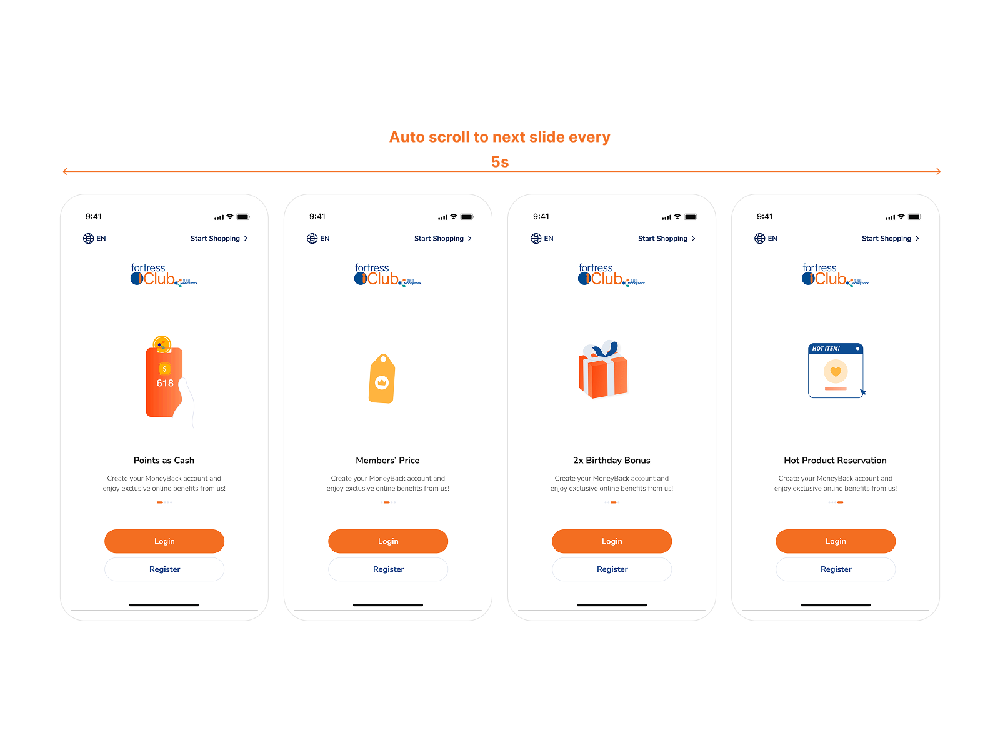

Development media placeholder
Onboarding sequence / key frames
Orient
Onboarding
- Context
- The previous app had no onboarding and took first-time users directly to Login.
- Motion decision
- Introduce information progressively instead of presenting everything at once.
- Product value
- Give new users a clearer and more guided entry into the app.